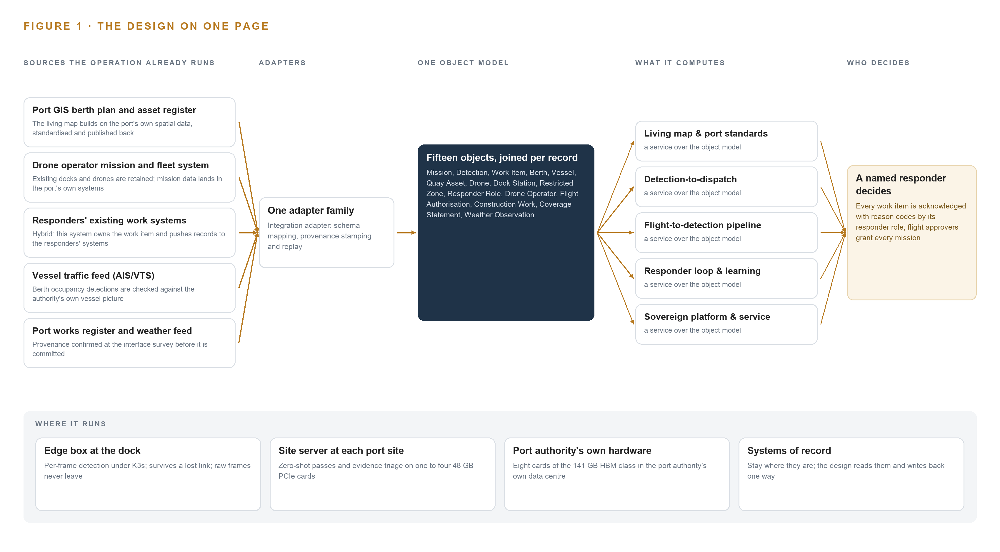
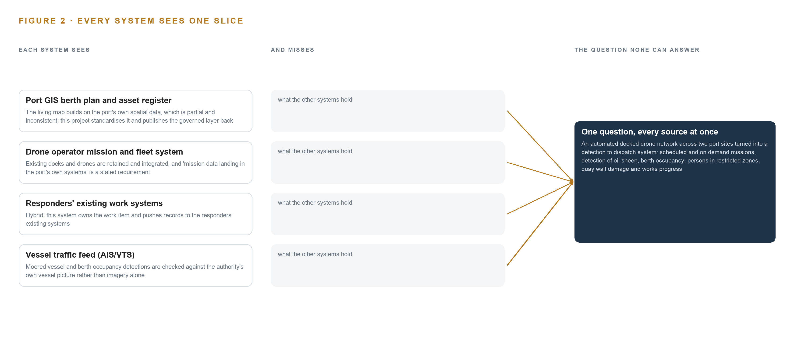
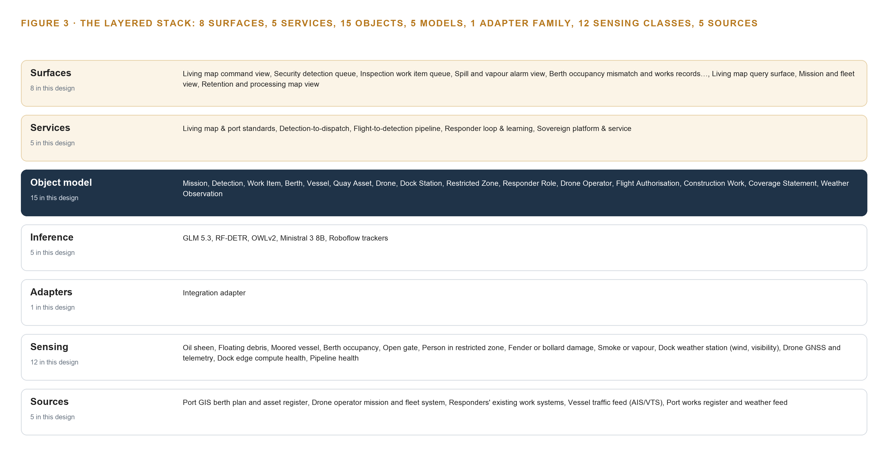
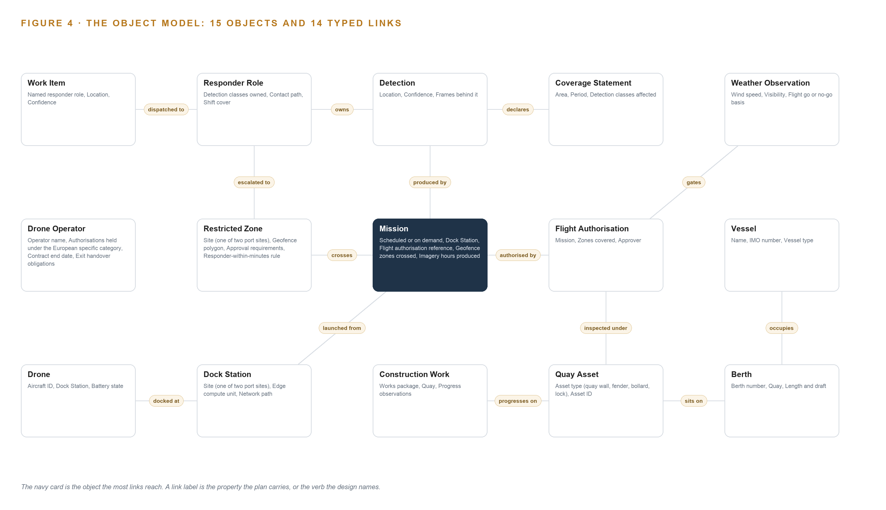
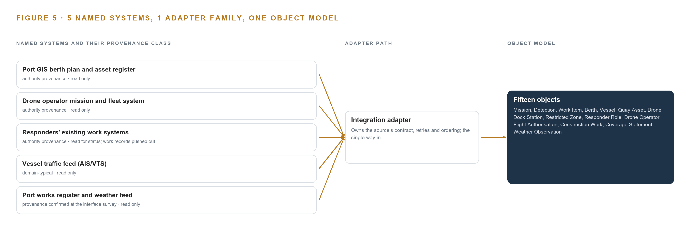
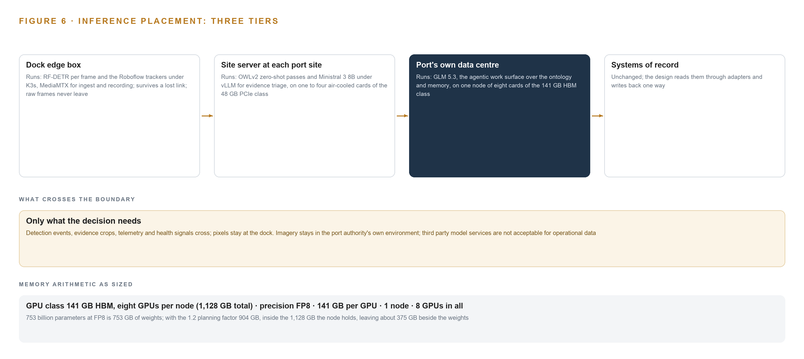
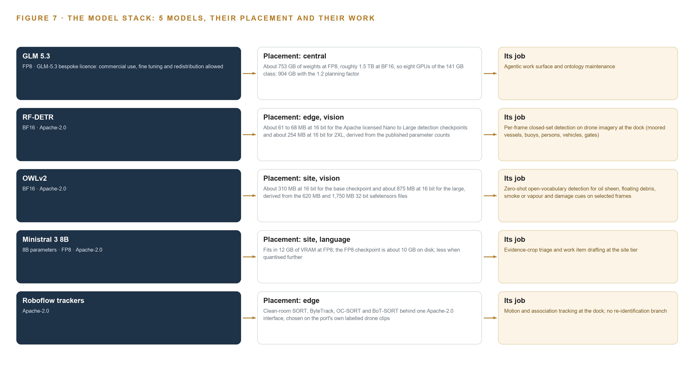
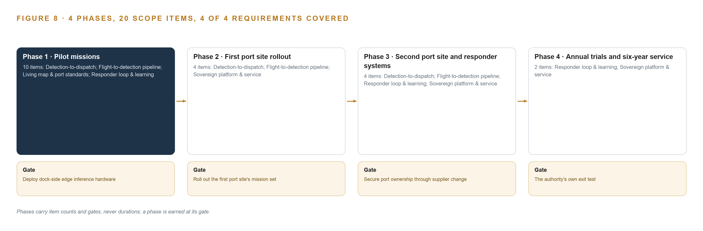
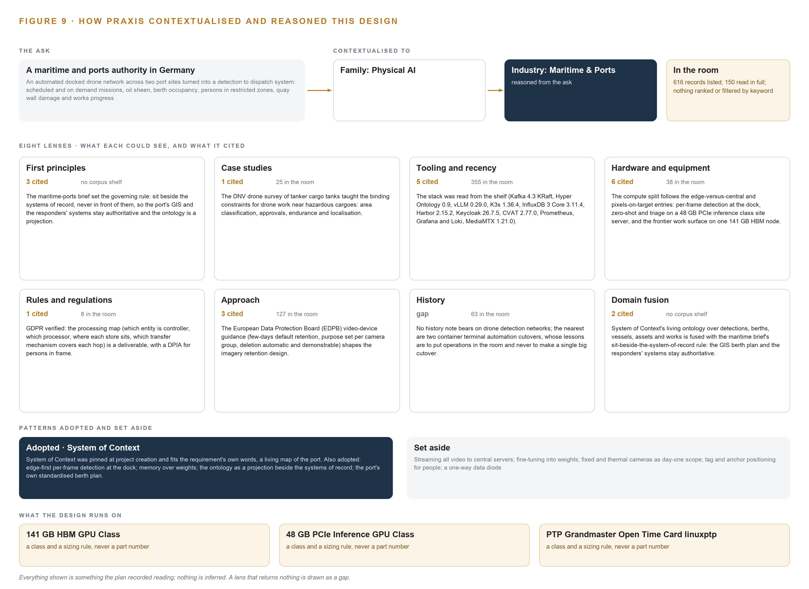

Port Drone Watch: From Oil Sheen to Dispatched Work on the Port's Own Hardware in Germany
For a maritime and ports authority in Germany, a physical AI system that turns the docked drone network at its two port sites into detections, dispatched work items and a living map, running entirely on the authority's own hardware.
For the authority's operations and security directors, the harbour, inspection and marine services leads, and the platform, data and computer vision engineers who would build and run it.
Vertical-Driven Architectures is a CodeNinja series of system designs. Every design in the series is driven by a real-world problem and scenario in a single industry, and every one is designed on Praxis, CodeNinja's platform for designing physical AI systems. Operations are described by class, never by name.
Port Drone Watch: From Oil Sheen to Dispatched Work on the Port's Own Hardware in Germany
What this is. An open reference architecture for system design in physical AI, built for a maritime and ports authority in Germany that already flies a docked drone network across two port sites, where owning the inference hardware that runs it costs about 735,000 US dollars over three years. Every flight's imagery becomes detections, and every detection becomes a work item with a named responder role, anchored to a real berth, quay asset or restricted zone in a living map built from the port's own spatial data. Oil sheen, floating debris, persons in restricted zones, fender or bollard damage, smoke or vapour and works progress reach a person who decides, under the European specific category drone rules, the Seveso regime and GDPR. It is written for the authority's operations and security directors, the harbour, inspection and marine services leads, and the platform, data and computer vision engineers who would build and run it. The operator is described by class, never by name.
The answer in numbers.
| Part | The design |
|---|---|
| Sources | Five systems, entering through one integration adapter family: the port GIS berth plan and asset register, the drone operator's mission and fleet system, the responders' existing work systems (read for status, work records pushed out), the vessel traffic feed (AIS/VTS) and the port's works register and weather feed, confirmed at the interface survey |
| Object model | 15 typed objects with 14 typed links, from the mission, drone, dock station and restricted zone through the detection, work item, flight authorisation and coverage statement to the berth, vessel, quay asset, construction work, responder role, drone operator and weather observation, published as JSON for reuse |
| Models | RF-DETR (Apache-2.0) for per-frame detection at the dock; OWLv2 (Apache-2.0) for zero-shot passes on oil sheen, debris, smoke and damage; Ministral 3 8B (Apache-2.0) for evidence triage and work item drafting; Roboflow trackers (Apache-2.0) for motion and association; GLM 5.3 (bespoke licence, 753B at FP8) for the agentic work surface; nothing trained into weights |
| Compute | Three tiers on the authority's own hardware: a GPU-class edge box at each dock, sized at the dock site survey; a site server at each port site with one to four 48 GB PCIe cards; and one node of eight 141 GB HBM cards (1,128 GB) in the port's own data centre, holding 753 GB of FP8 weights with a 1.2 planning factor, 904 GB. Detection events and evidence crops cross the boundary; pixels stay at the dock |
| Rollout | Four phases carrying 20 scope items (10, 4, 4, then 2) behind four gates: dock-side edge inference hardware in place, the first port site's mission set rolled out, port ownership secured through a supplier change, and the authority's own exit test; no detection class rolls out below its floor measured on the port's own two pilot missions |
| Three-year cost | About 735,000 US dollars to own the central node and the two site servers for three years (a range of 650,000 to 845,000: servers, support and power at the Eurostat non household tariff for Germany), against about 761,000 to rent the same card classes on the deepest three-year commitment in AWS Europe (Stockholm for the eight-card node, which Frankfurt does not sell, and Frankfurt for the site cards), so ownership costs about the same there, and about 2.02 million on demand, against which ownership costs about a third. Renting is a price reference only, because the imagery, the weights and the detection history stay on hardware the port owns; dock edge boxes are priced by quotation after the survey (Appendix A) |
| Human control | The system proposes and records and people decide every response: a detection stays proposed until a responder confirms, rejects or merges it, every work item is acknowledged with reason codes by its named responder role, flight approvers grant every mission, and automatic acts are limited to confirmation re-flights and notification escalation |
Reuse it. The object model, the model register and the figures are free to reuse under CC BY 4.0. Cite as https://codeatoms.ai/drone-detection-dispatch-port-germany/ (DOI 10.5281/zenodo.23635729).
Made with. Reasoned on [CodeNinja Praxis](https://codeatoms.ai/praxis/), the CodeNinja Atoms platform for designing physical AI systems. The object model imports into [Hyper Ontology](https://codeatoms.ai/hyper-ontology/), which turns it into a living system. Load it with the [hyper-ontology loader](../hyper-ontology-py/): `hyper-ontology show drone-detection-dispatch-port-germany`. Both are in beta; access by request.
A Detection Should Reach a Responder, Not a Video Archive
For a maritime and ports authority in Germany, the question a physical AI system must answer is deceptively simple: what is happening right now on the water, the quays and the restricted zones of its two port sites, and which named person should respond. Drones already fly from docks at both sites and land hours of video and still imagery every day, but nobody can watch all of it, so oil sheen drifts, persons cross restricted zones, fenders and bollards fail and works packages slip while the footage sits unreviewed. The answer must also satisfy three regimes at once: the European specific category drone rules that govern every flight, the Seveso directives that fence the hazardous installations the drones overfly, and the GDPR rules that protect every person the cameras catch in frame.
The design turns those flights into detections and dispatched work entirely on the authority's own hardware: five source systems enter through one adapter family, fifteen objects form one typed object model, five services and eight surfaces carry the work, and five models are placed across three tiers. Per-frame closed-set detection runs on the dock's edge compute so that detection survives an uplink loss; zero-shot open-vocabulary passes and evidence-crop triage run on the port's site servers; and the frontier-class work surface model, 753 billion parameters at FP8 held by one node of eight GPUs of the 141 GB class, runs in the port's own data centre. Every detection becomes a work item with a named responder role, people decide every response, and the loop learns from what responders found through memory rather than weight training, so the imagery, the weights and the detection history survive a change of drone operator.
The paper covers the industry problem and the join failure in Part I; the constraints, the stack, the object model, ingestion, inference placement, and the models and their licences in Part II; the rollout with its phases and gates, and ownership, in Part III; and it closes with how Praxis contextualised and reasoned the design. Readers weighing industrial ontology examples will find every object and typed link in chapter 5.

Contents
Each chapter is tagged for the reader it serves most directly: Executive, Team Lead, FDE, Reference.
| Abstract · A Detection Should Reach a Responder, Not a Video Archive | Executive | |
| PART I · THE PROBLEM | ||
| 1 | Hours of Drone Imagery Answer No One's Question | Executive |
| 2 | The Drone Footage Never Meets the Berth Plan | ExecutiveTeam Lead |
| PART II · THE DESIGN | ||
| 3 | Sovereignty and Seveso Shape Every Downstream Choice | Team Lead |
| 4 | One Stack Runs From the Docks to the Decisions | Team LeadFDE |
| 5 | Fifteen Objects Turn Drone Frames Into One Argument | FDE |
| 6 | Every Source Enters Through an Adapter, Never Directly | FDE |
| 7 | Detection Belongs at the Dock, Reasoning on Port Servers | FDE |
| 8 | Open Licences Decide What the Port Can Own | FDEExecutive |
| PART III · THE ROLLOUT | ||
| 9 | Pilot Flights Come Before Any Detection Is Trusted | Team LeadExecutive |
| 10 | The Detection History Survives a Change of Operator | Executive |
| PART IV · HOW IT WAS DESIGNED | ||
| Conclusion · The Port Owns the Eyes It Already Flies | Executive | |
| 11 | Praxis Recorded Every Choice This Design Stands On | Team LeadFDE |
| Sources | Reference | |
Hours of Drone Imagery Answer No One's Question
The authority already flies drones that produce hours of imagery a day across two port sites, yet the question that matters, what is happening right now and who should respond, goes unanswered because the footage outruns every pair of human eyes.
The abstract promised a port authority turning its existing drone flights into detections, dispatched work and a living map, entirely on its own hardware. This chapter states the question that promise answers, the documented cost of leaving it unanswered, and the scenario the design serves.
1.1 The Question and the Ground It Stands On
The authority needs one question answered continuously across its two port sites: what is happening right now, where exactly is it happening, and which named person should respond. Answering it requires data the operation already holds in fragments: hours of drone imagery and still images produced every day by scheduled and on-demand missions, the berth plan and asset register held in its geographic information system, the vessel traffic picture from the automatic identification system (AIS) and the vessel traffic service (VTS), its works records, and the weather observations that decide whether a flight can launch at all. Three regulatory regimes frame every part of the answer. Flights run under the European specific category drone rules, under which operations beyond the open category require operational authorisation tied to assessed risk, so every mission carries a flight authorisation reference and a geofence. Some zones sit inside Seveso perimeters, the European major-hazard regime around sites holding dangerous substances, which imposes approval requirements and responder-within-minutes rules the design must route detections around. And because the cameras photograph people, the whole imagery pipeline stands on the General Data Protection Regulation (GDPR), the European data protection framework: persons in restricted zones are detections to act on and personal data to process lawfully, with retention, signage and a processing map as first-order requirements, not afterthoughts.
1.2 The Documented Cost of Not Knowing
The cost of an unanswered waterline is documented, and it is measured in lives and fines. A peer-reviewed Bayesian network analysis of 505 maritime occupational accident cases traces how such accidents arise (Yu et al. 2025), and the US safety institute NIOSH holds that marine terminal and port workers carry higher fatality, injury and illness rates than other workers (CDC 2024). Pollution carries its own ledger: a shipping company was fined 2 million dollars for a maritime pollution offence in a single prosecution (US Department of Justice 2025), and a US safety investigation established the probable cause of a bulker's crash into a barge (TradeWinds 2021). Against that background, oil sheen that drifts for a day before anyone reviews footage, a person in a restricted zone noticed only in yesterday's recording, and quay damage found at annual inspection rather than at the next flight are not inefficiencies; they are latent incidents. The International Labour Organization now maintains an experimental global register of fatalities at sea covering occupational accidents, persons overboard and health-related deaths (ILO 2025), which is the scale of loss the register exists to reduce.
1.3 The Operation as a Scenario
The operation is a maritime and ports authority in Germany running two port sites, two places with distinct traffic, quays and hazard perimeters. Its drones are a docked network: aircraft that live in automated stations and launch on a schedule or on demand, flown by a retained drone operator under the European specific category. The fleet carries several payload classes, among them a patrol nadir camera, a berth survey camera and an incident response camera, with a thermal payload held as a named annual trial rather than day-one scope. Missions produce hours of imagery and still images every day, in salt air, wind and visibility conditions that ground flights and open multi-day coverage gaps. The people in the loop are few and named by role: flight approvers who grant authorisations, responder roles that own detection classes by domain, security, inspection, spill and vapour response, with shift cover and escalation paths, and the drone operator's own crew. The design draws on five source systems, four of them the port's own or its operator's, and produces eight detection classes: oil sheen, floating debris, moored vessels, berth occupancy, open gates, persons in restricted zones, fender or bollard damage, and smoke or vapour. The chapters that follow turn those flights into answers.
The Drone Footage Never Meets the Berth Plan
The mission system, the GIS berth plan, the vessel traffic feed and the responders' work systems each hold one slice of the port, and the join none of them can make is exactly where oil sheen, trespass, occupancy mismatch and quay damage live.
Chapter 1 set out the question. This chapter explains why no system the operation already runs can answer it.
2.1 What Each System Sees
Port GIS berth plan and asset register the living map builds on the port's own spatial data, which is partial and inconsistent; this project standardises it and publishes the governed layer back
Drone operator mission and fleet system existing docks and drones are retained and integrated, and 'mission data landing in the port's own systems' is a stated requirement
Responders' existing work systems hybrid, as the intake settled it: this system owns the work item and pushes records to the responders' existing systems
Vessel traffic feed (AIS/VTS) moored vessel and berth occupancy detections are checked against the authority's own vessel picture rather than imagery alone

2.2 What None of Them See Together
Each holds one slice, and the question needs all of them in one place at once, which today is done by hand at the cadence of whoever has the time.
Sovereignty and Seveso Shape Every Downstream Choice
Port-owned hardware, the European specific category drone rules, Seveso perimeters and GDPR together force the design's scoping decisions, each of which buys something and costs something this chapter prices in the open.
Chapter 2 showed that the failure is a join failure, not a data failure. This chapter states the goals that shape how the design makes that join, and prices the scoping decisions each goal forces.
3.1 Everything Runs on the Authority's Own Hardware and Survives a Change of Drone Operator
The first constraint is ownership: all compute sits inside the port authority's own environment on its own hardware, and mission data lands in the port's own systems. This is hard in this industry because the drone operator naturally holds missions and imagery in its own estate, and a six-year service will outlive operator contracts. Sovereign here means self-hosted, not small: the design runs per-frame detection at the dock, reasoning on port servers, and the imagery, the models and the detection history belong to the port, so a change of drone operator is a data-handover event the exit obligations are written around, not a rebuild.
3.2 Every Detection Becomes a Work Item with a Named Responder
The second constraint is the loop: people decide every response, and the platform proposes and records. It is hard because responders already live in their own work systems, so the design must own the work item, with its evidence frames, confidence, location and responder finding, and push records outward rather than demand that responders move. The acknowledgement is itself a decision object with reason codes, because the responder's finding is the most valuable data the loop collects.
3.3 Flights Obey the Specific Category and Seveso Perimeters
The third constraint is flight law: every mission runs under the European specific category with an authorisation, a geofence and zones whose approval requirements and responder-within-minutes rules the dispatch logic must honour, and some of those perimeters are Seveso sites. This is hard because the rules bind the design's own plumbing: a detection inside a Seveso zone cannot wait in a generic queue, and a weather grounding must publish what the gap blinded, not leave silence that reads as an absence of findings.
3.4 Persons in Frame Are Governed by GDPR
The fourth constraint is data protection: there is no domestic licence for camera use, and persons in frame are personal data from the moment of capture. This is hard because the simplest architecture, streaming everything and keeping everything, is unlawful. The processing map, retention covenant and signage are first-phase deliverables, retention defaults to days with automatic, demonstrable deletion, and the design improves through memory rather than weight training, so no responder finding ever becomes a training corpus.
3.5 Scoping Decisions Priced in the Open
Three scoping decisions follow from these goals, and each buys something at a stated cost, set out in Table 1.
| Decision | What it buys | What it costs |
|---|---|---|
| Standardise the port's own berth plan and asset register | Occupancy and damage detections anchored to real assets, and a governed layer published back to the port's GIS | Standardisation work on partial, inconsistent data, timeboxed to the pilot's missions and extended quay by quay |
| Detect at the dock edge, reason at the site tier | Detection that survives an uplink loss, with only events and evidence crops crossing the boundary instead of pixels | GPU-class edge modules at each station, rated for salt air, wind and temperature, with silicon fixed only at the dock site survey |
| Learn through memory over responder outcomes | Improvement that survives a change of drone operator without a training run | Acknowledgement discipline: every dispatched work item must be closed with a finding and reason codes from the first week |
3.6 What the Design Chose Against
The design also chose against alternatives, each for a stated reason, set out in Table 2; the out-of-scope entries close the list.
| Where | What was picked | Instead of, and why |
|---|---|---|
| Inference placement | Dock-side per-frame closed-set detection, with zero-shot passes and evidence triage on the port's site servers | Streaming all drone video to port servers for central inference; hours of video every day cannot cross the dock uplink, and detection must survive an uplink loss |
| Improvement | Agentic memory over responder outcomes, tuning thresholds, routing and confidence bands | Fine-tuning detection models into weights; nothing is trained into weights, so the port owns the open weights, the ontology and the detection history outright |
| Berth occupancy | A standardised berth plan built from the port's own GIS | A berth-management or port-call product; the requirement asks for occupancy against the port's own plan, and standardising the port's data is the deliverable |
| Fleet | Retain and integrate the existing docks and drones | Procuring new aircraft or stations; the six-year service integrates the retained fleet rather than replacing it |
| Response | The platform proposes and records; people decide every response | Autonomous response actions; automatic acts are limited to confirmation re-flights and notification escalation |
| Sensing | Route-based imagery from flights as tendered | Continuous condition monitoring of lock and bridge machinery, offered only later on the critical tier |
One Stack Runs From the Docks to the Decisions
Systems of record stay below, one object model sits in the middle, and five services and eight surfaces sit above, with detection at the dock edge, zero-shot reasoning on port servers and the work surface in the port's own data centre.
The constraints in Chapter 3 fixed the ground: everything runs on the port authority's own hardware, the port's systems stay authoritative, people decide every response, and the service must survive a change of drone operator. This chapter sets the architecture that satisfies all four at once, by placing one object model between the systems the port already runs and the surfaces its people already work at.
4.1 The Pattern and Why It Fits
The pattern is three bands. Below sit the systems of record: the port GIS berth plan and asset register, the drone operator's mission and fleet system, the responders' existing work systems and the vessel traffic feed, each kept exactly where it is, each read and never replaced. In the middle sits one object model, Hyper Ontology v0.9, holding fifteen objects and their typed links. Above it sit five services and eight surfaces, and beside them the agentic work surface where responders and operators ask questions of the map and its memory. The ontology sits beside the systems of record, never in front of them, so the port's GIS and the responders' systems remain the masters of their own facts and the ontology is a governed projection.
Inference is placed in three tiers rather than one. The dock edge box runs per-frame closed-set detection, because hours of daily video cannot cross the dock uplink and detection must survive an uplink loss. The port's site servers run zero-shot passes and evidence triage on selected frames. The port's own data centre runs the frontier work surface model on one node of eight GPUs of the 141 GB class. Figure 3 shows the layers with their counts: five sources, one adapter family, fifteen objects, five services, eight surfaces and five models.

4.2 The Stack Stage by Stage
Table 3 walks the same stack stage by stage, naming the component responsible at each stage, so an engineer can trace any guarantee to the part that provides it.
| Stage | What it is responsible for | How |
|---|---|---|
| Sources | Hold the port's authoritative records and the authority's mission data, all read | Five systems: the port GIS berth plan and asset register, the drone operator's mission and fleet system, the responders' existing work systems, the vessel traffic feed (AIS/VTS), and the port's works register and weather feed confirmed at the interface survey |
| Sensing | Produce the raw evidence the detectors read | Drone payloads on the retained fleet: the patrol nadir camera, the berth survey camera and the incident response camera, with thermal as a named annual trial; the dock weather station; drone satellite positioning (GNSS) and telemetry; dock edge compute and pipeline health sensors |
| Adapters | Mediate every read and hold the single write path into the model | One family, the integration adapter, carrying schema mapping, provenance stamping and replay |
| Object model | Turn events into one linked argument | Hyper Ontology v0.9 (Semantics + Kinetics) with fifteen objects; Apache Kafka 4.3 (KRaft) as the event backbone; InfluxDB 3 Core for telemetry; MediaMTX for video ingest and recording; Keycloak for identity and access |
| Inference | Place each model where its latency and its data live | The dock edge box, a GPU-class module under K3s, runs RF-DETR per frame with Roboflow trackers; the port's site servers run OWLv2 zero-shot passes and Ministral 3 8B under vLLM; the port's data centre runs GLM 5.3 for the work surface on one node of eight GPUs of the 141 GB class |
| Services | Compose the five capabilities | Living map & port standards; Detection-to-dispatch; Flight-to-detection pipeline; Responder loop & learning; Sovereign platform & service |
| Surfaces | Put each decision in front of the named person who owns it | Eight surfaces, from the living map command view and the security detection queue to the mission and fleet view and the retention and processing map view |
Fifteen Objects Turn Drone Frames Into One Argument
Fifteen objects and their typed links let a query walk from a frame to a detection to a berth to a responder role, a journey across mission, asset, actor and record that no document store can make.
The stack placed one object model at its centre and named it as the place where the port's argument is held. This chapter opens that model: fifteen objects, their typed links, the human loop that lives inside them and the posture that keeps them the port's own.
5.1 Every Object and the Links Between Them
The fifteen objects divide into six kinds. Two are events: Mission and Construction Work. Four are records: Detection, Work Item, Flight Authorisation and Coverage Statement. Three are sites: Berth, Dock Station and Restricted Zone. Three are assets: Vessel, Quay Asset and Drone. Two are actors: Responder Role and Drone Operator. One is a measure: Weather Observation. Figure 4 shows every object and every typed link between them, with the Mission object, the one the most links reach, in focus.
The links are what make the model an argument rather than a filing system. A Mission is launched from a Dock Station and crosses Restricted Zones under a Flight Authorisation. A Detection is produced by a mission and carries its frames and timestamps. A Work Item is dispatched to a responder role. A Vessel occupies a Berth, and the Berth sits on a Quay Asset, and Construction Work progresses on that same quay. A Coverage Statement declares which detection classes a weather grounding blinded, so an absence of findings is never mistaken for an absence of events. This matters because port work is dangerous work: workers in marine terminals and port operations have higher fatality, injury and illness rates than other workers (CDC 2024), and a damage finding that cannot reach a named responder is a finding the port does not have.
The payoff is the query. When an operator asks what changed on a quay since last week, the walk goes from the Quay Asset to its Berths, to the Vessels occupying them, to the Construction Work recorded against it, to the Detections confirmed on it, to the responder findings behind each, all in one traversal across mission, asset, actor and record. A document store cannot make this journey: it can find documents that mention the quay, but each hop to the vessel, the work package or the responder is another lookup with no guaranteed linkage, and the joins must be written in advance for every question rather than expressed once as typed links.

5.2 The Human Loop and the Hosting Posture
The human loop lives in the status vocabularies. A Detection is Proposed until a responder confirms it, rejects it or merges it with an earlier finding. A Work Item is Dispatched, then Acknowledged with reason codes, then Resolved or Closed no action. Acknowledgement is itself a decision object, so acknowledge rate, ignore rate and action rate are measurable from the first week, and the disagreement path is built before the agreement path. The system proposes and records; people decide every response, and its automatic acts are limited to confirmation re-flights and notification escalation.
The hosting posture follows the constraints. Every object, every frame and every model runs on the port authority's own hardware inside its own boundary. Identity is issued through Keycloak to named people in named roles. The single external link is the controlled ingest of the drone operator's mission data. The one write path into the object model runs through the adapter tier and the surfaces used by authenticated responders. The loop learns from what responders found through agentic memory, never by training weights, so the detection history and the improvement both belong to the port and survive a change of drone operator.
5.3 One Object in Its Recorded Form
The Mission object, in its recorded form, shows how the model carries the dock station, the flight authorisation, the zones crossed and the imagery hours behind every flight.
{ "id": "mission", "label": "Mission", "kind": "event", "anchored_in": "The drone operator's mission and fleet system", "properties": [ "Scheduled or on demand", "Dock Station", "Flight authorisation reference", "Geofence zones crossed", "Imagery hours produced" ], "status_vocabulary": [ "Planned", "Authorised", "In flight", "Complete", "Aborted", "Grounded by weather" ], "links": [ { "to": "dock-station", "label": "launched from" }, { "to": "restricted-zone", "label": "crosses" }, { "to": "flight-authorisation", "label": "authorised by" } ] }Every Source Enters Through an Adapter, Never Directly
Five named source systems, from the drone operator's mission and fleet system to the vessel traffic feed, reach the object model only through the integration adapter family, which holds the guarantees the port's own systems stay authoritative.
Chapter 5 described what the object model holds and who writes to it. This chapter describes how data gets there: five named source systems, one adapter family, and an event backbone that keeps every frame, event and record ordered, timestamped and replayable.
6.1 Five Sources and Their Provenance
Five source systems feed the model, and Figure 5 maps each to its provenance class and its adapter path. The port GIS berth plan and asset register is an authority-provenance source, read only: the living map builds on it, and this project standardises it and publishes the governed layer back, so the port's own spatial data becomes the deliverable rather than being replaced by a bought one. The drone operator's mission and fleet system is an authority-provenance source, read only: the docks and drones are retained, and mission data landing in the port's own systems is a stated requirement, so flights, telemetry and imagery flow in through a controlled ingest. The responders' existing work systems are authority-provenance, read for status: this system owns the work item and pushes records out to them, so responders keep working in their own tools. The vessel traffic feed, AIS and VTS, is domain-typical provenance, read only: moored vessel and berth occupancy detections are checked against the authority's own vessel picture rather than imagery alone. The fifth source, the port's works register and weather feed, has its provenance confirmed at the interface survey before it is committed.

6.2 What the Adapter Tier Guarantees
One family, the integration adapter, stands between every source and the object model, and it carries five guarantees. First, authority: the port's systems remain the masters of their facts, and the ontology is a projection, so a berth plan revision in GIS supersedes the projected berth, never the reverse. Second, provenance: every event is stamped with its source system and provenance class, so any detection can be traced to the mission, frame and model version that produced it. Third, isolation: schema drift in a source is absorbed in the adapter, not in the object model. Fourth, replay: because adapters write to the log, any object can be rebuilt from recorded events. Fifth, fallback: if the drone operator's interfaces prove closed or undocumented, an interface survey in the first workstream either opens them or falls back to dock-side capture of the video stream with telemetry by file drop, and the guarantee that mission data reaches the port's own systems holds either way.
6.3 The Event Backbone
Apache Kafka 4.3, running in KRaft mode without a separate coordination service, is the backbone every adapter writes to. Ordering is per partition key: events for one mission and one asset are strictly ordered, which is what lets a detection cite the frame that produced it and a work item cite the detection. Delivery is at-least-once, and writes into the object model are idempotent, keyed on mission and frame timestamps, so a replayed event creates no duplicate detection. Buffering lives at the dock: the edge box under K3s retains events and MediaMTX recordings locally through an uplink loss, so detection continues and the backlog resynchronises when the link returns, which is the doctrine that detection survives an uplink loss. Replication runs between brokers in the port's own data centre, inside the boundary. Model and artifact updates arrive through Harbor as an air-gapped registry, so nothing enters by ad hoc transfer. All of it rides one clock: linuxptp with chrony, disciplined by an OCP Time Card grandmaster, keeps drone frames, telemetry and vessel traffic records aligned, and Prometheus, Grafana and Loki watch the backbone's lag and health so a silent gap becomes an alarm, not a coverage hole discovered later.
Detection Belongs at the Dock, Reasoning on Port Servers
Per-frame closed-set detection runs on the dock's edge box because pixels cannot cross the uplink and detection must survive its loss, while zero-shot passes, evidence triage and the frontier work surface run on the port's own servers under an explicit latency budget.
Chapter 6 described how every source enters through the integration adapter, so that missions, imagery references, vessel positions and responder records all arrive as governed events in one backbone. This chapter describes where the thinking happens: which model runs on which tier of the authority's own hardware, how fast each answer must arrive, and what survives when the dock's uplink, its power or its update path fails.
7.1 Three Tiers and the Arithmetic That Places Them
The design runs inference on three tiers, and Figure 6 sets them side by side. The first tier is the dock's edge box, an edge AI compute module of the GPU class sized by the dock site survey against salt air, wind and temperature. It runs the per-frame closed-set detector, RF-DETR, over the retained drone fleet's camera streams for moored vessels, buoys, persons, vehicles and gates, together with the Roboflow trackers for motion and association, all orchestrated as containers under K3s with MediaMTX handling ingest and recording. Per-frame detection belongs here for one reason: hours of video and still imagery every day cannot cross the dock uplink, so the pixels are examined where they land and only events and evidence crops travel onward.
The second tier is the site server at each port site, running one to four cards of the 48 GB PCIe inference server class, air-cooled. It runs OWLv2 for zero-shot, open-vocabulary passes over selected frames, covering oil sheen, floating debris, smoke or vapour and damage cues, and Ministral 3 8B under vLLM for evidence-crop triage and work item drafting. Ministral 3 8B at FP8 occupies about 12 GB, which fits the 48 GB card with room for concurrent requests; it is treated strictly as a describer and reader of evidence, never a localiser, because position comes from drone GNSS telemetry resolved against the standardised berth plan.
The third tier is the central node the authority owns: one node of eight GPUs of the 141 GB HBM class, 1,128 GB in total, running GLM 5.3 as the agentic work surface over the ontology and memory. The sizing line is explicit: 753 billion parameters at FP8, one byte per parameter, is 753 GB of weights; the 1.2 planning factor for KV cache and activations raises the requirement to 904 GB; the node's 1,128 GB holds it, leaving roughly 375 GB beside the weights for KV cache and activations.

7.2 The Latency Budget
The budget is stated as three classes of answer rather than one number. Per-frame detection must keep pace with the camera stream itself, because a detector that falls behind the frames it is given produces a delayed picture of a moving port. Detection-to-dispatch for persons in restricted zones and Seveso perimeter events carries the responder-within-minutes rule, and the design routes those work items by the zone's own rule; the stakes behind that budget are documented, since workers in marine terminals and port operations carry higher fatality, injury and illness rates than other workers (CDC 2024). Queries on the work surface, such as what changed on a quay since last week, are answered at conversational speed from the ontology and memory on the central node.
7.3 What Crosses the Boundary, and What Fails Gracefully
What crosses the network boundary is deliberately small: detection events, evidence crops, telemetry and health signals cross it; pixels do not. When the uplink fails, the dock keeps detecting, and the Kafka backbone buffers events on the dock side for delivery and resynchronisation when the link returns. When power fails, Network UPS Tools with the IP-rated dock enclosure and PoE budgeting carries the edge box through the interruption and reports its state. When the update path fails, the air-gapped Harbor artifact and model registry on the authority's own infrastructure holds the last good versions, and the site falls back to them rather than to silence. Weather grounding is treated the same way honestly: each grounding day publishes a coverage statement naming the detection classes that went blind, so responders never mistake a coverage gap for an absence of findings.
Open Licences Decide What the Port Can Own
Five models, four under Apache 2.0 and one under a bespoke licence that permits the authority's internal use, run entirely on hardware the authority owns, so no weight, no frame and no detection record ever leaves with a change of drone operator.
Chapter 7 placed each inference tier on the authority's own hardware and drew the latency budget each answer must meet. This chapter names the five models that occupy those tiers, states the licence behind each one, and shows in Figure 7 and Table 4 why every choice leaves the authority holding its own weights, its own frames and its own detection history.

8.1 Five Models and the Licences That Let the Port Own Them
Figure 7 stacks the five models against their tiers. GLM 5.3 is the frontier model of the register, 753 billion parameters served at FP8, and its role is the agentic work surface and ontology maintenance on the central node. Its bespoke licence grants commercial use, fine tuning and redistribution, with a security-review trigger that applies only to model-as-a-service operators above 10 billion US dollars in group revenue, a threshold far above a port authority's purely internal use. It was chosen because the requirement's own words commit a command centre where people decide every response and operators can ask what changed on a quay, and under the pinned system of context architecture that surface runs on the ontology and memory rather than on any external service.
RF-DETR runs per-frame closed-set detection on drone imagery at the dock, covering moored vessels, buoys, persons, vehicles and gates. Its Apache-2.0 licence allows the authority to hold and redistribute the weights outright, and its checkpoints are small: about 61 to 68 MB at 16 bit from Nano to Large, about 254 MB for 2XL. OWLv2 carries the zero-shot open-vocabulary role on the port's site servers, detecting oil sheen, floating debris, smoke or vapour and damage cues on selected frames without port-specific training; it is Apache-2.0 as well, at about 310 MB for the base checkpoint and about 875 MB for the large at 16 bit. Ministral 3 8B drafts work item text beside the evidence frames at the site tier; it is Apache-2.0 from a European publisher, a deliberate fit for an EU public buyer, occupies about 12 GB at FP8 on the 48 GB PCIe class, and is bounded as a describer and reader, never a localiser. Roboflow trackers complete the stack at the dock: clean-room SORT, ByteTrack, OC-SORT and BoT-SORT implementations behind one Apache-2.0 interface, chosen on the port's own labelled drone clips, doing motion and association only with no re-identification branch.
8.2 The Model and Equipment Register
Table 4 gathers the models, the hardware classes and sizing rules, the sensing, the patterns the design stands on, and the ground it runs on, so that the authority can audit every row as a thing it holds. The pattern rows matter as much as the model rows: system of context is the pinned primary architecture, memory rather than weight training is how the loop learns, and the rule that events and evidence crops cross the boundary while pixels stay at the dock is what makes the whole register operable.
| The choice | What was picked | Why here |
|---|---|---|
| Frontier work surface model | GLM 5.3, 753B parameters at FP8, central node | Bespoke licence permits commercial, internal use and redistribution; the command centre role is committed by the requirement |
| Per-frame closed-set detector | RF-DETR, Apache-2.0, dock edge tier | Small checkpoints keep pace with the camera stream; the authority holds the weights outright |
| Zero-shot open-vocabulary detector | OWLv2, Apache-2.0, site tier | Detects sheen, debris, smoke and damage cues without port-specific training data |
| Evidence triage and drafting model | Ministral 3 8B at FP8, Apache-2.0, site tier | About 12 GB fits the 48 GB PCIe class; European publisher suits an EU public buyer |
| Object tracking | Roboflow trackers, Apache-2.0, dock edge tier | Motion and association only, chosen on the port's own labelled clips |
| Frontier hardware class | 141 GB HBM GPU class, eight GPUs per node | 753 GB of weights plus the 1.2 planning factor fits 1,128 GB with KV cache headroom |
| Site inference hardware | 48 GB PCIe inference server class, one to four cards, air-cooled | Sized by memory class, never by product name |
| Edge AI compute | GPU-class edge module sized by the dock site survey | Rated against salt air, wind and temperature at the dock |
| Time synchronisation | OCP Time Card grandmaster with linuxptp and chrony | Frames, telemetry and detections share one clock across tiers |
| Sensing | Cameras as payloads on the retained drone fleet, dock weather station, drone GNSS and telemetry, pipeline health sensors | Detections are geo-located from telemetry against the standardised berth plan |
| Governing pattern | System of Context, with a work surface where the authority's own people build their agents on memory | People decide every response; the loop learns through memory, not weight training |
| Boundary pattern | Events and evidence crops cross the boundary, not pixels | Hours of daily imagery cannot cross the dock uplink, and detection must survive its loss |
Pilot Flights Come Before Any Detection Is Trusted
Four phases carrying twenty items move the service from two pilot missions on the port's own imagery to a six-year operation, and no detection class rolls out below its measured floor.
Chapter 8 fixed the model register and the licences that let the authority hold its own weights. This chapter lays out the path from two pilot missions on the port's own imagery to a six-year operation: four phases carrying twenty items, a gate on each phase that can stop the work cheaply, and the measurements that decide whether any detection class earns the responders' trust.
9.1 Four Phases, Twenty Items, Four Gates
Phase 1 carries ten items across four workstreams: detection-to-dispatch, the flight-to-detection pipeline, the living map and port standards, and the responder loop and learning. Its items include standing up agentic memory over responder outcomes, standardising the berth plan and asset register for the quays the pilot missions cover, and mapping responder roles with their dispatch rules. Its exit gate is the dock-side edge inference hardware in place. Phase 2 carries four items across three workstreams and rolls out the first port site's mission set; its items include geofencing the Seveso perimeters with gate approvals and routing Seveso detections to a responder within minutes. Phase 3 carries four items across four workstreams: extending detections to the second port site, pushing work records into the responders' existing systems, and learning from what responders found. Its exit gate is port ownership secured through a supplier change. Phase 4 carries two items across the responder loop and the sovereign platform workstreams: running annual trial projects, beginning with the thermal night payload, without rebuilding the platform, and operating the six-year service on the port authority's own hardware. Figure 8 sets the four phases side by side with their item counts, workstreams and gates. Requirement coverage is complete: of the four requirements in the authority's ask, four are covered in full, none partial and none a gap.

9.2 What the Rollout Measures
Pilot acceptance is measured on the port's own two missions, because pretrained and zero-shot detectors are unproven on this port's imagery until its own drones fly it. No detection class rolls out below its measured floor, and the floor must hold under drift with an operator-owned tuning path. On the responder side, acknowledgement is a decision object with reason codes, so the acknowledge rate, the ignore rate and the action rate are reported from the first dispatched work item onward; the disagreement path is built before the agreement path. Weather grounding days are measured honestly through the pilot, and every gap publishes a coverage statement naming its blind classes, so a grounded fleet reads as a coverage gap rather than an absence of findings. Berth occupancy detections are checked against the authority's own vessel picture rather than imagery alone.
9.3 Failure Modes
Each failure mode below has a designed answer, and the answers are items inside the phases rather than promises beside them, as Table 5 records.
| What fails | What the design does |
|---|---|
| The berth plan and asset register standardisation slips, leaving occupancy and damage detections unanchored to real assets | Standardisation is timeboxed to the pilot's two missions and the quays they cover, then extended site by site |
| The drone operator's interfaces are closed or undocumented, blocking the mission data ingest the whole service depends on | An interface survey opens the phase with the authority's cooperation written into the service contract; worst case, dock-side capture of the video stream with telemetry by file drop |
| Weather grounding leaves multi-day coverage gaps that responders mistake for an absence of findings | Coverage statements publish by default with each gap's blind classes named, and grounding days are measured honestly through the pilot |
| Zero-shot and pretrained detectors prove weak on this port's own imagery | Pilot acceptance is measured on the port's own two missions; no detection class rolls out below its measured floor, and the floor must hold under drift with an operator-owned tuning path |
| Responders rubber-stamp or quietly ignore dispatched work items, poisoning the learning loop | Acknowledgement is a decision object with reason codes, acknowledge, ignore and action rates are reported from the first dispatch, and the disagreement path is built before the agreement path |
| The GDPR data protection impact assessment (DPIA) or workforce consultation surfaces late and stops go-live | The processing map, retention covenant and signage are phase-one items, and retention defaults to days with automatic, demonstrable deletion |
9.4 Lessons
Publish the gaps you cannot fly through. A detection system that goes quiet in bad weather teaches responders to read silence as safety, so the coverage statement is a first-class object with its own status vocabulary, published by default and superseded only by a newer statement for the same area and period.
Measure acceptance on the authority's own imagery. Vendor benchmarks on other ports' footage settle nothing here, which is why the pilot's two missions on this port's own quays are the acceptance basis and why every rollout is tied to a measured floor rather than a claimed one.
Make acknowledgement a decision, not a reflex. Responders in port operations already carry higher fatality and injury rates than most other workers (CDC 2024), so a work item that is rubber-stamped wastes their attention and corrupts the loop the service learns from; reason codes on every acknowledgement keep the learning honest.
9.5 What Is Still Open
Three questions remain open. The weather source is to confirm, either the port's own weather station or the national meteo service, and settling it fixes the go or no-go basis recorded on every weather observation. The works register and the vessel traffic system are both to confirm as sources, and settling them decides whether construction work and vessel objects are anchored in live feeds or in opening balances. The edge silicon and its serving runtimes are fixed only at the dock site survey, and settling that question fixes the per-frame detection budget at the dock. None of the three blocks the pilot; each blocks a later phase, which is why each sits behind a gate.
The Detection History Survives a Change of Operator
The authority owns the object model, the open weights, the imagery and the full decision record, and the drone operator object carries the exit handover obligations that make a supplier change a non-event for the service.
Chapter 9 showed how the service earns trust phase by phase and what each gate measures. This chapter settles the question the gates protect: who owns what the service produces, and why a change of drone operator is a contract event rather than a rebuild.
10.1 Who Owns What the Design Builds
The object model is the authority's. Its fifteen objects, the typed links between them and the standardised berth plan they sit on are built from the port's own GIS data inside this project, and the governed layer is published back to the port's systems as its own spatial standard, so the living map is a port asset and not a vendor fixture. The weights are the authority's. Every model in the register arrives under a licence that permits the port to hold and run it: the vision detectors and the site-tier language model under Apache 2.0, the frontier work-surface model under its bespoke licence with commercial and internal use granted. Nothing is trained into weights under the pinned architecture, so there are no fine-tunes to lose or re-license; every threshold, routing rule and confidence band lives in memory as data the port owns and can export. The decision record is the authority's. Every detection with its frames and confidence, every work item with its named responder and finding, every flight authorisation and every coverage statement is a recorded object, and the six-year history they accumulate is the evidence base the next decision reads. The boundary is the authority's. All processing runs on the port authority's own hardware inside its own environment; imagery crosses no external service, retention defaults to days with automatic deletion, and the processing map is a phase-one item rather than a later disclosure. The drone operator object carries the exit obligations that make this hold: the operator's name, the authorisations held under the European specific category, the contract end date and the exit handover obligations, with a status vocabulary that moves from in contract through notice period to changed. When it changes, the missions, drones and stations change with it; the detections, the responders' findings and the map they are anchored to do not.
10.2 The Offer Behind the Design
CodeNinja builds the shape this paper describes: Adaptive Operations turns the retained drone fleet's imagery into detections of physical behaviour, from oil sheen and smoke to berth occupancy and quay wall damage; Decision Systems ranks every detection into a work item that a named responder decides on, with the decision recorded; Hyper Ontology holds the fifteen-object model that anchors every detection to a real quay, berth or asset; Hyper Pragma is the work surface where the authority's own people build agents over that model and its memory; and Sovereign Infrastructure is the reason the whole service runs on the authority's own hardware under open-weight licences inside its own boundary. The design itself was produced on Praxis, CodeNinja's platform for designing physical AI systems, and every choice in it traces to the recorded reading the next chapter shows.
The Port Owns the Eyes It Already Flies
Taken in one view, the design is a projection over the port's own systems: drones and docks the authority already runs feed frames to an edge box at the quay, detections rise into a fifteen-object model that links every finding to its berth, its asset, its mission, its responder and its history, and five services push work items into the systems responders already use while the port's own servers hold every weight and every record. Nothing sits in front of the systems of record, and no automatic act goes beyond a confirmation re-flight or a notification escalation.
The same shape travels: any operator with retained drone flights, a partial spatial register and existing responder systems can stand it up, provided it standardises its own spatial data instead of buying a replacement, commits to edge-first detection where the dock uplink is thin, keeps learning in memory rather than in weights, and writes the supplier exit obligations into the service contract from the first day.
Praxis Recorded Every Choice This Design Stands On
Every choice in this paper, from the edge-first placement to the memory-over-weights doctrine, traces back to recorded reading on Praxis, and this chapter shows the trail from ask to equipment.
Chapter 10 closed the ownership question and named the offer behind the design. This chapter turns inward and shows how the design was reasoned: what Praxis was asked, what it read, and how each recorded choice became a pattern the paper stands on. Every design in this series is produced on Praxis, CodeNinja's platform for designing physical AI systems, and this chapter lets a reader trace any choice in the paper back to the recorded reading that justified it, as Figure 9 shows.
11.1 Contextualising the Ask
The ask, in the authority's requirement's own words, was a docked drone network across two port sites turned into a detection-to-dispatch system: scheduled and on-demand missions, oil sheen, berth occupancy, persons in restricted zones, quay wall damage and works progress detected on the imagery, every detection a work item with a named responder, a living map of the port, imagery and models owned by the port and surviving a change of drone operator, under the EU specific category drone rules, Seveso and GDPR. Praxis assigned it to the Physical AI family and the maritime and ports industry, with the country, Germany, stated by the authority's requirement itself. What was in the room were the recorded briefs, intake answers, stack and hardware shelves and model register entries listed in the source trail; of 616 shelf records listed, 150 were read in full, and each is available on request.

11.2 The Eight Lenses
Praxis reasoned the ask through eight lenses, each contributing what Table 6 records; a lens that returned nothing is shown as a gap rather than smoothed over.
| Lens | Could see | Cited | What it contributed |
|---|---|---|---|
| First principles | no corpus shelf | 3 | The maritime-ports brief set the governing rule: sit beside the systems of record, never in front of them, so the port's GIS and the responders' systems stay authoritative and the ontology is a projection. |
| Case studies | 25 records listed, 25 read in full | 1 | The DNV drone survey of tanker cargo tanks taught the binding constraints for drone work near hazardous cargoes: area classification, approvals, endurance and localisation. |
| Tooling and recency | 355 records listed, 0 read in full | 5 | The stack was read from the shelf (Kafka 4.3 KRaft, Hyper Ontology 0.9, vLLM 0.29.0, K3s 1.36.4, InfluxDB 3 Core 3.11.4, Harbor 2.15.2, Keycloak 26.7.5, CVAT 2.77.0, Prometheus, Grafana and Loki, MediaMTX 1.21.0). |
| Hardware and equipment | 38 records listed, 38 read in full | 6 | The compute split follows the edge-versus-central and pixels-on-target entries: per-frame detection at the dock, zero-shot and triage on a 48 GB PCIe inference class site server, and the frontier work surface on one 141 GB HBM node. |
| Rules and regulations | 8 records listed, 0 read in full | 1 | GDPR verified: the processing map (which entity is controller, which processor, where each store sits, which transfer mechanism covers each hop) is a deliverable, with a DPIA for persons in frame. |
| Approach | 127 records listed, 87 read in full | 3 | The European Data Protection Board (EDPB) video-device guidance (few-days default retention, purpose set per camera group, deletion automatic and demonstrable) shapes the imagery retention design. |
| History | 63 records listed, 0 read in full | 0 | No history note bears on drone detection networks; the nearest are two container terminal automation cutovers, whose lessons are to put operations in the room and never to make a single big cutover. |
| Domain fusion | no corpus shelf | 2 | System of Context's living ontology over detections, berths, vessels, assets and works is fused with the maritime brief's sit-beside-the-system-of-record rule: the GIS berth plan and the responders' systems stay authoritative. |
11.3 Patterns Adopted and Set Aside
Four patterns were adopted. Edge-first per-frame detection at the dock, with events and evidence crops crossing the boundary rather than pixels, because hours of daily video cannot cross the dock uplink and detection must survive its loss. Memory over weights, because the pinned architecture trains nothing and improvement must survive a supplier change without a training run. The ontology as a projection beside the systems of record, so the port's GIS and the responders' systems stay authoritative. Standardising the port's own berth plan rather than buying a berth-management product, because the requirement asks for occupancy against the port's own plan. Set aside with reasons: streaming all video to central servers, rejected on uplink arithmetic; fine-tuning into weights, rejected by the architecture; fixed and thermal cameras as day-one scope, thermal being a named annual trial and cameras being payloads on the retained fleet; tag and anchor positioning for people, rejected because drone telemetry against the standardised berth plan geo-locates every detection; and a one-way data diode, rejected because no operational technology control zone is crossed.
11.4 Where the Reasoning Lands
The equipment classes the reasoning lands on are the 141 GB HBM GPU class, one node of eight cards holding the frontier work-surface model at FP8 with the planning factor and KV cache beside the weights; the 48 GB PCIe inference server class at the site tier, one to four air-cooled cards running the zero-shot passes and the site language model; the open grandmaster time card with linuxptp and chrony, holding one clock across sensors and systems; and the rugged enclosure, mounting and power class with network UPS tools at the dock. Everything shown in this paper, from the doctrines to the model register to these classes, was recorded reading on Praxis, and nothing in it is inferred.
What the Port's Own Inference Hardware Costs Over Three Years
The paper is written for a port authority in Germany with two port sites (the title, the abstract and chapter 11). This appendix therefore prices for Germany, with the AWS Europe (Frankfurt) region, eu-central-1, as the rental reference and the Eurostat non household electricity price for Germany as the tariff. The design runs inference on three tiers of the authority's own hardware (chapter 7, section 7.1; Table 4). The central tier is "one node of eight GPUs of the 141 GB HBM class, 1,128 GB in total, running GLM 5.3 as the agentic work surface over the ontology and memory" (chapter 7, section 7.1). At the site tier the paper places "the site server at each port site, running one to four cards of the 48 GB PCIe inference server class, air-cooled", carrying OWLv2 and Ministral 3 8B under vLLM (chapter 7, section 7.1), which across "two port sites" (chapter 1) is two servers. The dock tier is "an edge AI compute module of the GPU class sized by the dock site survey" running RF-DETR and the Roboflow trackers (chapter 7, section 7.1; Table 4, "Edge AI compute"); the paper gives no count of docks and fixes the edge silicon only at the dock site survey (chapter 9), so the dock boxes are named and left out of the total rather than guessed. The central node and the two site servers are priced two ways: owned, from a reseller's published configured prices with support and power added, and rented, from the AWS price files for the EU, on demand and on the two three year all upfront plans. Every input is dated and cited, and the arithmetic is shown.
A.1 The Answer
Owning the central node and the two site servers for three years costs about 735,000 US dollars, inside a range of 650,000 to 845,000. Renting the same card classes around the clock costs about 761,000 dollars on the deepest three year commitment (an AWS EC2 Instance Savings Plan, all upfront: p5en.48xlarge, eight H200 cards of 141 GB, in Europe (Stockholm), plus four g6e.xlarge, one L40S card of 48 GB each, in Europe (Frankfurt)), about 1.30 million dollars on the three year Compute Savings Plan, all upfront, and about 2.02 million dollars on demand. Against the deepest commitment, ownership costs about the same (735,423 / 761,202 = 0.97, and 0.85 to 1.11 across the range), so the arithmetic supports no saving in either direction there; against on demand, ownership costs about a third (735,423 / 2,024,472 = 0.36). Neither p5e.48xlarge nor p5en.48xlarge is sold in Frankfurt, so the H200 rental is priced in Stockholm, the cheaper of the two EU regions that offer p5en, as noted in A.2. Renting is a price reference only, because the requirement keeps the imagery, the models and the detection history on hardware the port owns, surviving a change of drone operator, under GDPR and the Seveso regime (chapter 3; Table 4). GLM 5.3 carries a bespoke license that, in the paper's words, "permits commercial, internal use and redistribution" (Table 4, "Frontier work surface model"); no price is asserted for it here. RF-DETR, OWLv2, Ministral 3 8B and the Roboflow trackers are open weights under Apache-2.0 (Table 4) and carry no license line.
A.2 What the Hardware Would Cost
| Option | Basis | Three year cost (USD) |
|---|---|---|
| Owned, in the port's data centre and the two site server rooms | One 8x H200 node and two 2U servers with two L40S cards each, with support and power, broken out below | 650,000 to 845,000, typical 735,000 |
| AWS, Europe (Stockholm), on demand | p5en.48xlarge, eight H200 cards of 141 GB, at 67.72672 dollars an hour (AWS 2026b), 26,280 hours | 1,780,000 |
| AWS, Europe (Stockholm), three year Compute Savings Plan, all upfront | p5en.48xlarge at 45.17225 dollars an hour (AWS 2026a), 26,280 hours | 1,187,000 |
| AWS, Europe (Stockholm), three year EC2 Instance Savings Plan, all upfront | p5en.48xlarge at 25.46525 dollars an hour, the deepest three year plan for this instance in the region (AWS 2026a), 26,280 hours | 669,000 |
| AWS, Europe (Frankfurt), on demand | Four g6e.xlarge, one L40S card of 48 GB each, two per port site, at 2.327 dollars an hour each (AWS 2026b), 26,280 hours | 245,000 |
| AWS, Europe (Frankfurt), three year Compute Savings Plan, all upfront | Four g6e.xlarge at 1.09462 dollars an hour each (AWS 2026a), 26,280 hours | 115,000 |
| AWS, Europe (Frankfurt), three year EC2 Instance Savings Plan, all upfront | Four g6e.xlarge at 0.87495 dollars an hour each, the deepest three year plan for this instance in the region (AWS 2026a), 26,280 hours | 92,000 |
| Rented, both tiers together | On demand 1,779,858 + 244,614; Compute Savings Plan 1,187,127 + 115,066; EC2 Instance Savings Plan 669,227 + 91,975 | 2,024,000 on demand, 1,302,000 Compute Savings Plan, 761,000 EC2 Instance Savings Plan |
The owned line, item by item:
| Line | Basis | Three year cost (USD) |
|---|---|---|
| Central node | Thinkmate GPX GXS5-2508-8HGX-H2, 5U, configured with NVIDIA HGX H200, eight H200 SXM5 cards of 141 GB (1.1 TB of HBM3), two Intel Xeon Platinum 8558 processors of 48 cores and 330 W each, 32 x 32 GB of DDR5 memory, one 1.92 TB NVMe drive, 3000 W 4+2 redundant power and a three year advanced parts replacement warranty, published configured price of 402,215 dollars (Thinkmate 2026a) | 402,215 |
| Node support | 8 to 12 percent of hardware value a year (Introl 2026), 10 percent typical, over three years | 96,532 to 144,797, typical 120,664 |
| Node power | 6.26 kW of IT load, eight cards at the H200 SXM maximum of 700 W (NVIDIA 2026a) plus two processors at 330 W (Thinkmate 2026a), 6.26 x 26,280 = 164,513 kWh, times a power usage effectiveness of 1.6 (above the 1.54 industry weighted average, Uptime Institute 2025) = 263,220 kWh, at the Eurostat non household price for Germany in band IB, 20 to 499 MWh a year (the band this load falls in: about 309 to 398 MWh a year for the node and both site servers together), in the first half of 2026, the latest semester published, 0.1818 euros per kWh excluding taxes and levies or 0.2366 euros excluding VAT and other recoverable taxes and levies (Eurostat 2026), at 1.1205 dollars to the euro (ECB 2026) = 20.37 or 26.51 cents per kWh | 53,620 to 69,782 |
| Site servers, two | Thinkmate GPX QH8-12E4-8GPU, 2U, configured with NVIDIA L40S cards of 48 GB, one AMD EPYC 9124 processor of 16 cores and 200 W, 32 GB of DDR5 memory, one 1.92 TB NVMe drive, 3000 W redundant power and a three year advanced parts replacement warranty, published configured prices of 35,679 dollars with one card, 47,191 with two and 70,215 with four (Thinkmate 2026b); the paper's range is one to four cards a server, two taken as typical | 71,358 to 140,430, typical 94,382 |
| Site support | 8 to 12 percent a year (Introl 2026), 10 percent typical, over three years | 17,126 to 50,555, typical 28,315 |
| Site power | 0.55 kW a server with one card, 0.9 kW with two, 1.6 kW with four, each L40S at its 350 W maximum (NVIDIA 2026b) plus the 200 W processor, for two servers 1.1 to 3.2 kW, 1.8 kW typical, times 26,280 hours and the same 1.6 PUE = 46,253 to 134,554 kWh, 75,686 typical, at the same tariff | 9,422 to 35,672, typical 20,065 |
| Total | Low: one card a site, 8 percent support, tariff excluding taxes and levies. High: four cards a site, 12 percent, tariff excluding only VAT and recoverable taxes. Typical: two cards a site, 10 percent, the same tariff | 650,273 to 843,451, typical 735,423 |
The power lines are ceilings: the cards and processors are taken at full rated draw around the clock, memory, drives and fans are not counted, and an agentic work surface on a port's command centre will rarely hold eight H200 cards at 700 W. The reseller prices are United States dollar prices from a United States reseller, before EU import duty and VAT; a European reseller's page found in search could not be read on the day (HTTP 403), so no European configured price is cited, and a written quote in Germany will differ.
Why this hardware: the paper's sizing line for the central node is explicit, "753 billion parameters at FP8, one byte per parameter, is 753 GB of weights; the 1.2 planning factor for KV cache and activations raises the requirement to 904 GB; the node's 1,128 GB holds it, leaving roughly 375 GB beside the weights for KV cache and activations" (chapter 7, section 7.1), and Table 4 fixes the class as "141 GB HBM GPU class, eight GPUs per node" because "753 GB of weights plus the 1.2 planning factor fits 1,128 GB with KV cache headroom" (Table 4, "Frontier hardware class"). Eight H200 cards at 141 GB are 1,128 GB, and that is the node priced, as Thinkmate's HGX H200 configuration and as p5en.48xlarge, whose eight H200 cards carry the same 1,128 GB. On the site tier, "Ministral 3 8B at FP8 occupies about 12 GB, which fits the 48 GB card with room for concurrent requests" (chapter 7, section 7.1), and OWLv2 adds about 310 MB for the base checkpoint and about 875 MB for the large at 16 bit (chapter 8, section 8.1), so one 48 GB card holds the site tier and the paper's "one to four cards" buys concurrency and headroom rather than memory. The owned typical takes two cards a server; the rental takes two g6e.xlarge a site, one L40S card each, because no AWS instance carries exactly two L40S cards and nothing on the site tier has to be split across two cards. At the paper's low end, one g6e.xlarge a site, the deepest commitment for both tiers comes to 715,000 dollars (669,227 + 45,987), and at its high end, one g6e.12xlarge of four cards a site, 929,000 dollars (669,227 + 259,285). Frankfurt does not list p5e.48xlarge or p5en.48xlarge in its on demand or Savings Plan files; among EU regions, p5en.48xlarge is listed in Stockholm (eu-north-1) at 67.72672 dollars an hour and in Spain (eu-south-2) at 68.35968, so Stockholm is used for the H200 node and Frankfurt for the g6e site tier (AWS 2026a; AWS 2026b).
Not in the table: the dock edge modules, "GPU-class edge module sized by the dock site survey" (Table 4, "Edge AI compute"), for which the paper gives no count of docks and whose silicon "and its serving runtimes are fixed only at the dock site survey" (chapter 9), so they are sold by quotation once the survey holds; the retained drone fleet, the docks and the cameras carried as payloads on that fleet, which the authority already flies and which carry no new cost (chapter 3; Table 4, "Sensing"); the OCP Time Card grandmaster, the dock weather station, the drone GNSS and telemetry links, the pipeline health sensors, the IP rated dock enclosures, PoE budgeting and UPS units (Table 4; chapter 7, section 7.3), all named as classes, not part numbers; the servers for the Kafka backbone, the ontology store, the time series store and the air gapped Harbor registry, which the paper chooses by class and does not size (chapter 4, Table 3; chapter 7, section 7.3); EU import duty, VAT, freight and installation, which a written quote in Germany settles; people, facilities, the flight authorisations and the GDPR and Seveso approvals work, which every option carries; and residual value at the end of three years. The configured prices already carry a three year parts warranty, so the support line may count some cover twice. Every rented figure is a floor, because egress, storage and support plans are excluded and the all upfront plans are paid in full on day one. No closed model token comparison is printed, because the paper states no token volume for the work surface.
A.3 Sources for This Appendix
- AWS. 2026a. EC2 Instance and Compute Savings Plans price files, eu-central-1 and eu-north-1, version 20261022033042, as read 23 October 2026. https://pricing.us-east-1.amazonaws.com/savingsPlan/v1.0/aws/AWSComputeSavingsPlan/current/region_index.json, https://pricing.us-east-1.amazonaws.com/savingsPlan/v1.0/aws/AWSComputeSavingsPlan/20261022033042/eu-central-1/index.json and https://pricing.us-east-1.amazonaws.com/savingsPlan/v1.0/aws/AWSComputeSavingsPlan/20261022033042/eu-north-1/index.json
- AWS. 2026b. EC2 on demand price data for the AWS pricing page, Linux, shared tenancy, EU (Frankfurt), EU (Stockholm) and EU (Spain), as read 23 October 2026. https://b0.p.awsstatic.com/pricing/2.0/meteredUnitMaps/ec2/USD/current/ec2-ondemand-without-sec-sel/EU%20(Frankfurt)/Linux/index.json, https://b0.p.awsstatic.com/pricing/2.0/meteredUnitMaps/ec2/USD/current/ec2-ondemand-without-sec-sel/EU%20(Stockholm)/Linux/index.json and https://b0.p.awsstatic.com/pricing/2.0/meteredUnitMaps/ec2/USD/current/ec2-ondemand-without-sec-sel/EU%20(Spain)/Linux/index.json
- ECB. 2026. Euro foreign exchange reference rates, US dollar, 1.1205 on 22 October 2026, as read 23 October 2026. https://www.ecb.europa.eu/stats/eurofxref/eurofxref-daily.xml
- Eurostat. 2026. Electricity prices for non-household consumers, bi-annual data (nrg_pc_205), Germany, band IB (20 MWh to 499 MWh), first half of 2026, 0.1818 euros per kWh excluding taxes and levies and 0.2366 euros excluding VAT and other recoverable taxes and levies, dataset updated 19 October 2026, as read 25 October 2026. https://ec.europa.eu/eurostat/api/dissemination/statistics/1.0/data/nrg_pc_205?geo=DE&nrg_cons=MWH20-499¤cy=EUR&unit=KWH&siec=E7000&time=2026-S1 and https://ec.europa.eu/eurostat/databrowser/view/nrg_pc_205/default/table
- Introl. 2026. GPU infrastructure TCO model, as read 23 October 2026. https://introl.com/blog/gpu-infrastructure-tco-model-5-year-enterprise-ai-deployment
- NVIDIA. 2026a. H200 specifications, H200 SXM, up to 700 W, 141 GB, as read 23 October 2026. https://www.nvidia.com/en-us/data-center/h200/
- NVIDIA. 2026b. L40S specifications, 350 W maximum power, 48 GB, as read 23 October 2026. https://www.nvidia.com/en-us/data-center/l40s/
- Thinkmate. 2026a. GPX GXS5-2508-8HGX-H2 5U H200 Xeon server, online configurator, configured as stated, as read 23 October 2026. https://www.thinkmate.com/system/gpx-gxs5-2508-8hgx-h2 and https://www.thinkmate.com/systems/servers/gpx/h200
- Thinkmate. 2026b. GPX QH8-12E4-8GPU rackmount server, online configurator, configured with one, two and four NVIDIA L40S 48 GB cards, as read 23 October 2026. https://www.thinkmate.com/system/gpx-qh8-12e4-8gpu and https://www.thinkmate.com/systems/servers/gpx/l40s
- Uptime Institute. 2025. Global Data Center Survey 2025, weighted average annual PUE of 1.54, as read 23 October 2026. https://intelligence.uptimeinstitute.com/resource/uptime-institute-global-data-center-survey-2025 and https://datacenter.uptimeinstitute.com/rs/711-RIA-145/images/2025.Annual.Survey.Report.pdf
Source Register
Yu, J., J. Zhao, X. Wang and Y. Cao. 2025. Maritime occupational accidents analysis: A data-driven Bayesian network approach. Ocean & Coastal Management. https://www.sciencedirect.com/science/article/pii/S0964569125002479
CDC NIOSH. 2024. About Maritime Safety and Health: Marine Terminals and Port Operations. https://www.cdc.gov/niosh/maritime/about
TradeWinds. 2021. US safety investigation reveals probable cause of Marfin-linked bulker's crash into barge. https://www.tradewindsnews.com/casualties/us-safety-investigation-reveals-probable-cause-of-marfin-linked-bulker-s-crash-into-barge/2-1-1321500
US Department of Justice. 2025. Shipping Company Fined $2M for Maritime Pollution Offense. https://www.justice.gov/opa/pr/shipping-company-fined-2m-maritime-pollution-offense
ILO. 2025. Global register of fatalities at sea: Experimental data. https://www.ilo.org/sites/default/files/2025-04/STCMLC-2025-Information%20document-EN.pdf
About CodeNinja
CodeNinja is a Middle Eastern American artificial intelligence lab and system of context company focused on building self-improving systems. We are reinventing knowledge work to close the loop between vertical AI use cases and the generalized intelligence that fuels it, accelerating the path toward organizational superintelligence. More at codeatoms.ai.